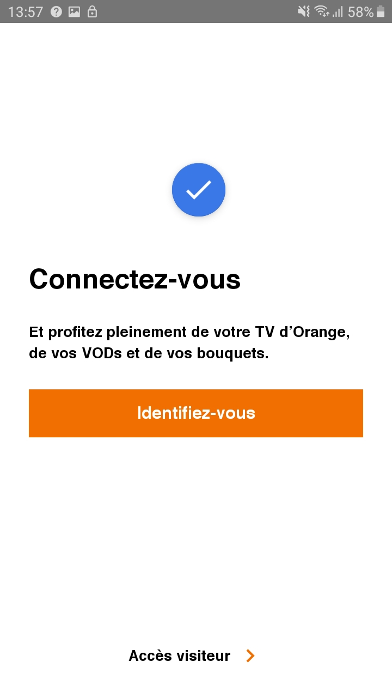
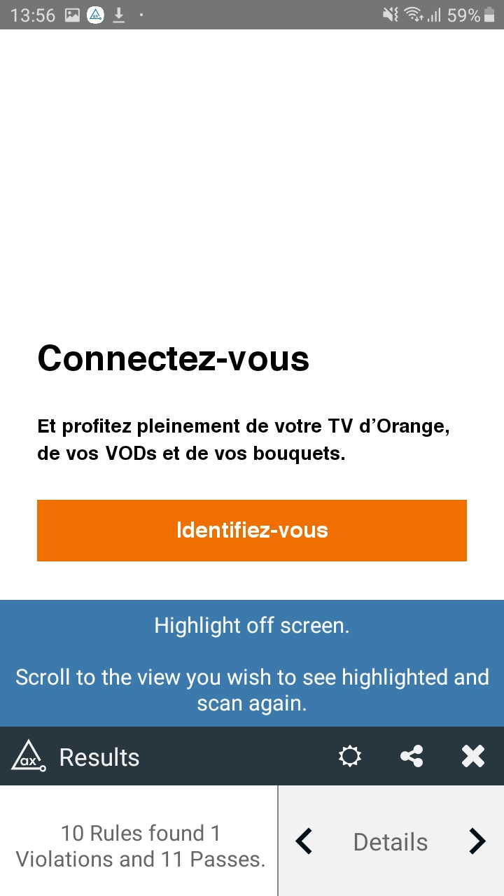
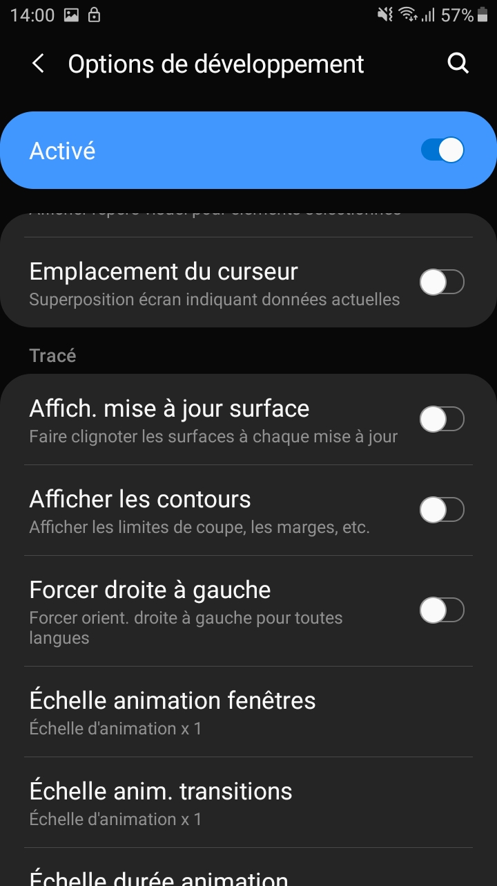
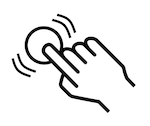
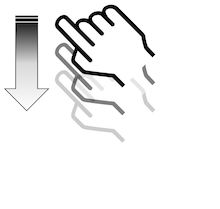

Android accessibility testing
Orange group requires its Web sites to be compliant with the level AA of the Web Content Accessibility Guidelines (WCAG) 2.1. The equivalent for native mobile applications is a transposition of these criteria and compliance with [Android platform recommendations] (https://developer.android.com/training/accessibility/testing).
We recommend 4 steps to test accessibility with the objective to detect and fix accessibility errors as soon as possible during the project lifecycle. Whenever possible, it is useful to bring in an accessibility expert to get feedbak all along the project, as early as the design phase, as it could be expensive to fix accessibility issues identified during the test phase only.
-
The first step is to check accessibility during the design phase, on interface models or prototypes. Android app created for Orange must also be compliant with the Orange Design Guidelines (“Android”, “Digital Colour Palettes”, “Accessibility”) that detail the color usage, the type system, etc.
-
The second step is to test the code during the development phase, by the developers. This step consists of performing automated tests or using the Lint tool from Android Studio.
-
The third step is to scan the application with accessibility analysis tools.
-
The last step is to carry out extensive manual tests, using the app as people with different disabilities or limitations would use it.
Ideally, the tests should be performed on Android mobiles without a custom OS like the Pixel. They must then be carried out on the mobiles with custom OS most used by the application.
To test accessibility on Android, it is useful to download from Google Play, Android Accessibility Suite and Accessibility Scanner. The tools can be combined to check more criteria at the same time.
Developer testing: code analysis #
This step allows accessibility issues to be reported directly during the development phase and causes application build errors or various warnings. The developer must therefore correct them directly in order to be able to build his application and make it work, which automatically makes it more accessible before even putting it through manual tests or analysis tools. In addition, it avoids possible accessibility regressions.
Lint #
The developer can first use the Lint tool in Android Studio, on his application, to do a first pass on the accessibility problems encountered. 5 accessibility problems can be reported with Lint :
- ClickableViewAccessibility: If a view overloads
onTouchEventor oveloardsonTouchListener, but does not implementperformClick - ContentDescription : non-textual widgets with no contentDescription
- KeyboardInaccessibleWidget : widgets being declared as clickable but not focusable.
- LabelFor : an EditText must contain either a hint, either the reference of a label associated with labelFor
- GetContentDescriptionOverride : overriding getContentDescription can cause accessing accessibility services issues. If you need to modify the description, you should instead call the function: setContentDescription
Example of a Lint report in Android Studio:

Automated tests: Espresso #
Espresso is a framework for UI testing on Android. You can integrate the ATF framework (Accessibility Test Framework), which will add a layer of tests concerning accessibility.
No explicit test needs to be written. Once ATF is integrated into the Expresso tests, accessibility checks are added automatically. ATF works with ViewAction, meaning that it will automatically perform the accessibility check on ViewAction interactions set up in the Espresso tests. Additionally, to enable accessibility checks, you must call the AccessibilityChecks.enable() function in the test suite.
How integrate ATF :
@Before public static void enableAccessibilityChecks() { AccessibilityChecks.enable(); }companion object { @BeforeClass @JvmStatic fun enableAccessibilityChecks() { AccessibilityChecks.enable() } }
So, when in the test suite a ViewAction.click () is performed on a button that does not match the size required for an interactive element, the test will appear as an error until the accessibility issue be resolved.
Perform automated accessibility tests on the complete screen #
Accessibility testing automation according to ViewAction can be limited. That's why, validations from root view can be enabled to test all views, without the 'ViewActions' restrictions. To do this, replace AccessibilityChecks.enable() by AccessibilityChecks.enable().setRunChecksFromRootView(true)
Log accessibility errors rather than causing test failures #
Accessibility errors can be logged so that they appear in the Android Studio logcat, rather than causing Espresso tests fail, although this is not recommended. This should only be used temporarily. To do this, add the following function:
AccessibilityChecks.enable().setThrowExceptionForErrors(false)
Create a whitelist #
Rather than log all accessibility errors in the logcat, it is possible to create a whitelist to log only the ones you want, while keeping the others in error. To do this, we must add the following function :
AccessibilityChecks.enable().setRunChecksFromRootView(true).setSuppressingResultMatcher(matchesView(anyOf(withId(R.id.buttonPlus))))
In this example, the view with the id buttonPlus will not be indicated in error if there is an accessibility problem, but will be displayed in the logcat.
Application scan : analysis tools #
Analysis tools complement the first approach, in order to detect other accessibility problems, such as those related to the size of the buttons, color contrasts etc ...
Accessibility Scanner #
The scanner can be downloaded from the playstore.
The scanner takes screenshots of the current activity and checks:
- that the screen contains "vocalizations or labels" for the screen reader
- that the clickable areas are large enough and that they have their own label
- color contrasts
Please note, this is only a verification aid, the tool sometimes reports false positives.
Some of these checks are duplicated with lint.
In case of doubt about contrasts, Colour contrast analysor makes a more precise diagnosis.
Procedure: #
- Activate the scanner in settings/accessibility/Accessibility Scanner (settings/accessibility/Installed services/Accessibility Scanner with One UI for Samsung devices). A floating action button appears on the screen.
- To test the display, press the button. A screenshot is taken and the list of suggested fixes is displayed.
Accessibility Scanner use exemple:
The floating button used to generate a report when Accessibility Scanner is active
The report thus generated by Accessibility Scanner once the button is clicked.

Google Play - Pre Launch Report #
Similar to the analysis performed by Accessibility Scanner, Google Play is able to generate accessibility reports after uploading its application to the developer console. Based on the same Framework as the Accessibility Scanner application, it verifies in particular 3 UI requirements within the application:
- The area used for interactive elements: a too small button would be indicated in the report for example
- Contrasts: checks that the contrast ratios are respected between the texts and their backgrounds
- Content descriptions: checks that all elements have a text to describe it to the user if necessary
Since this test is carried out from the Google Play console, this can be a final check made by the Product Owner himself, before pushing the application into production, and thus see that the accessibility criteria have been met.
Google Play report example :

aXe #
aXe is an application available on the Google Play Store and which makes it possible, as well as Accessibility Scanner or the Pre Launch Report from Google, to display accessibility problems. Although redundant with the two previous tools presented in some checks, it is recommended to use it as a complement, since it is able to display different accessibility errors, and will therefore perfectly complement the first exams.
To use aXe, you just need to download the application and then follow the instructions. Using a floating button , an analysis can be launched on the screen of your choice, and the errors report will be immediately produced at the bottom of the screen.
aXe use example :
aXe floating button displayed on the screen to trigger a report.

The report generated by aXe once the button is clicked.
UI Automator View #
UI Automator View is an Android SDK tool that scans and analyzes the UI components of an Android application. This makes it possible to see the hierarchy of views and the different properties for each one.
Although not a tool dedicated to accessibility, it can be used to analyze in more detail an accessibility issue, and better understand its origin.
To use this tool, you need to install the Android SDK. Once installed, you will find the tool at the following path: C:\users\username\AppData\Local\Android\sdk\tools\uiautomatorviewer.bat
To use it on an application, you need to have the developer mode activated on your phone, and to connect it via a USB cable to a computer, which has UI Automator View started. Once these conditions are met, just click on the Device Screenshot button in the tool to launch the UI components analysis of the screen displayed on the phone.
Layout bounds tool #
It is possible on Android to display the bounds of the different views of an application, which makes it possible to detect possible problems related to the size of the elements, to check margins are sufficient between various elements, and to verify that each sensitive area has a sufficient size.
To do this, navigate in "Settings/Developer options" and activate the option "Show layout bounds" in the category "Drawing"
Layout bounds use example:
The settings screen for layout bounds activation.
Screen example with layout bounds activate

Colour Contrast Analyser #
Color contrasts must be verified on the application mockups, or with Accessibility Scanner on an Android mobile. If any doubt remains, it is possible to take a screenshot of the application, then to check on a computer [Measure the level of color contrast] (../../../web/toolbox/methods-and-test-tools/color-contrast-level/) with the Color Contrast Analyzer tool.
For the values to respect see the [section concerning colors] (../design#colors).
Manual tests: use cases #
Manual tests are those that you will perform yourself, by reproducing the situation experienced by your users, and therefore using their interaction tools. It is even better to have the application tested by real users with disabilities. Several tools must be used, to take into account as many possible situations as possible:
Screen reader TalkBack #
The screen reader is a tool for the blind and visually impaired people. It has two functions: vocalization and on-screen navigation. All significant elements must be vocalized in logical order.
For Talkback activation and use, you can get more details in the section about it.
The different types of Talkback navigation:
- Reading by scanning with your finger : by sliding your finger slowly on the screen, Talkback announces the elements as you pass your finger on.

-
Linear reading : You can explore the screen, item by item, by swiping your finger left or right to navigate between items, in order. It is also possible to browse the navigation settings by swiping up or down the screen until you get the desired setting. The swipe to the right or to the left will then be done using the chosen parameter; The various existing navigation parameters are:
- Headings: navigate by headings
- Links: navigate by links (email, phone number, website or other links on the screen)
- Controls: navigate by checkboxes, switches, text fields, buttons, radio buttons, sliders.
- Default: explore every element on the page in logical order.
- Double click with one finger
-  Activate the last vocalized element
- Swipe up or down with two fingers
-
 Vertical scroll in the page
Vertical scroll in the page
- Swipe left or right with two fingers
-
 Horizontal scroll in the page
Horizontal scroll in the page
- Swipe right with one finger
-
 Moves to the next element
Moves to the next element
- Swipe left with one finger
-
 Moves to the previous element
Moves to the previous element
- Swipe up or down with one finger
-  Change the navigation setting applied
-
Search your screen : it is possible to navigate using screen search; to do this, swipe left then down, enter the search term and choose a match from the list provided
- Read continuously : To use
read continuously, open general contextual menu by swiping down then right, and choose the option *read from top or read from next item. Then, double tap to select the option. Continuous reading will start and can be stopped by tapping on the screen.
Procedure #
Use the application on the differents use cases and check that all the information is vocalized in a logical and understandable order as well as:
-
Are all the significant elements accessible?
-
Is all the information vocalized in a logical and understandable order?
-
Are the interactive elements vocalized with the associated action? (button, checkbox ... Double tap to activate)
-
Are the states of the elements specified? (disabled, checked)
-
Are temporary messages and alerts vocalized?
-
Are the transitions between activities vocalized?
-
Are error messages and dynamic content vocalized?
-
Are the horizontal scrolls vocalized?
-
Are visible items the only items to be vocalized (no ghost items vocalized)?
-
Are the titles of the activities vocalized?
-
Is the workflow easy?
-
Is the vocalization coherent, succinct, and simple?
-
Are decorative images well ignored? And on the contrary, are the meaningful images vocalized?
Ideally, the test should be done without looking at the screen, or by activating the black screen (Darken the screen).
Focus navigation (with keyboard) #
Navigation in an application or a web page must be possible using an external keyboard (connected to the smartphone by Bluetooth or USB), in order to reproduce the case of people who cannot use the touch screen, such as those using a joystick (on a wheelchair for example), or those with Parkinson's disease. It is important to check its operation because some developments can cause difficulties to navigate correctly in the page.
To test keyboard navigation, you must connect a computer keyboard to the smartphone, either with an adapter (USB - USB C for example), or, if the keyboard is bluetooth, by pairing the keypad and the phone. The bluetooth keyboard has the advantage of facilitating debugging.
Procedure #
Navigate the application using the keyboard and check that:
- all functionalities are accessible.
- the focus remains sufficiently visible on each element receiving this focus (activable elements, buttons, clickable elements, check boxes, etc.).
List of main keyboard shortcuts #
- TAB key to advance the focus.
- SHIFT + TAB keys to move the focus back.
- Enter key to activate the focused element (link, button, menu ...).
- Space bar to check/uncheck a checkbox.
- Directional arrows to modify the selection of the radio buttons, to move in a drop-down list, or to scroll through the scrollbar) when they are present.
These are the same keys used to test the accessibility of a website. But the use of the Tab in relation to the arrows as well as the use of the space bar in relation to the enter key are less codified: the test is considered successful when at least one of the two options allows the action to be taken.
Remark: the inability to exit a feature or the application is a blocking issue.
Switch Access #
Switch Access is an application for people with motor disorders. It allows you to control the phone by programming keys. It cannot replace the keyboard tests, but remains interesting in the case of the two switch method.
To activate it, proceed as follows:
- Go to phone settings
- Navigate in accessibility menu (then Services installed with the Samsung overlay), then select Switch Access, then Settings
- Check that the automatic search is disabled
- Use the Volume Up button as corresponding to the action Go to the next option
- Use the Volume Down button as corresponding to the Select action
- Return to the main screen from Switch Access and enable or disable the Switch Access accessibility option when necessary
Procedure #
Navigate in the application using the Next button (volume up).
Then check that:
- Can the workflow be covered completely and easily, in a logical order?
- Can the inputs be edited easily?
- Are the highlighted elements only those on which we can perform an action?
Show all interactive elements #
To highlight all the interactive elements of a screen, and thus do a quick check, it is possible to use the Group Selection option of the Switch Access.
To do this, select the Group Selection method as Scanning Method in the settings of Switch Access, and then assign a key for scanning.
Once inside your application, you just have to press the Select action (low volume in our configuration) to display all the interactive elements and thus check that:
- Are all interactive elements highlighted correctly?
- Are only interactive elements highlighted?
Magnification #
Android offers several enlargement options:
- Font size
- Display size
- Magnification
Read the instructions when you activate the tools.
Procedure: #
- Set Font size and Display size to the maximum. Navigate in the application and note the texts that are no longer readable because they have disappeared or they overlap.
- Enable Magnification option from accessibility settings. Go back to your application and tap the screen 3 times (if you have kept this shortcut) to start the display with magnification. Check that the screens are readable in this mode. Pinch with 2 fingers to adjust zoom and drag 2 fingers to move around the screen. All information on the screen should be readable in zoom mode.
Orientation #
It is necessary to check the orientation of your application, as it should work in both landscape and portrait mode. Manual tests must be performed in both modes, since constraining the user to a single mode poses accessibility problems.
Accessibility timeouts #
This tool is only available from Android Q.
On some applications, the UI may change after a delay (for example the disappearance of control buttons on a video player after a few seconds). This delay can be adapted in the settings to suit everyone's needs , some users needing more time to successfully "see" the controls and interact with them. You can then use this AccessibilityManager function which allows to obtain the recommended timeout for the user, according to these accessibility preferences: public int getRecommendedTimeoutMillis(int originalTimeout, int uiContentFlags)
To test whether this need for accessibility is taken into account by the application, proceed as follows:
- Go to the phone settings
- Navigate in accessibility menu, then select Time to take action
- Choose a timeout from the options offered
- Check that the application adapts well to the delay indicated above, for UI changes potentially affected by this delay.
Voice Access #
Voice Access is an application integrated into [Android Accessibility Suite] (https://play.google.com/store/apps/details?id=com.google.android.marvin .talkback), intended for people with motor disorders. It allows you to control the application by voice instead of the touch screen.
Among the possible commands:
- Open "app"
- Go back
- Go home
- Show notifications
- Scroll up
- Scroll right
- Scroll down
- Swipe forwards
- Etc ..
Once Voice Access is enabled, numbers appear next to each item you can interact with. If you wish to interact with a Save button whose number is 6, you can say the following commands:
- 6
- Save
- Click 6
- Click save
It is necessary to test that there are not several identical labels for interactive elements within the same screen. Although the user can still use the number for voice control, this limits the ability to use their label. It is also useful to test that you can open the application by name, with the command Open "application".
Voice Access use example:
Screen example displaying a floating button which allows you to start Voice Access.

Screen example with Voice Access enabled.

Select to Speak #
Select to Speak is a tool from Android Accessibility Suite, that makes it possible to read selected elements of the screen.
When a single item is selected, the tool vocalizes the item. When multiple items are selected, it implements a logical reading order like Talkback but it does not implement the actions or state of the items.
It is useful for the visually impaired, when the screen is not readable, for learning to read (it functions like karaoke) or for learning a foreign language.
It can be used for demonstration purposes but is redundant with Talkback for accessibility testing without being able to replace it.
These images are licensed under a Creative Commons Share Alike 2.0 license. Photo credit: openexhibits